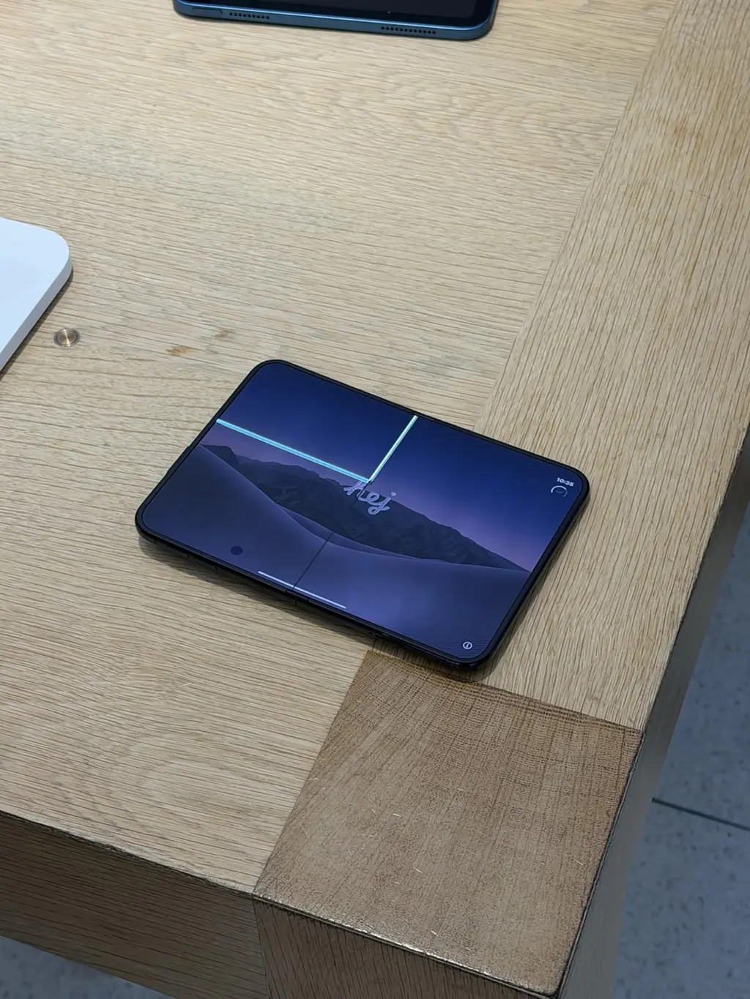
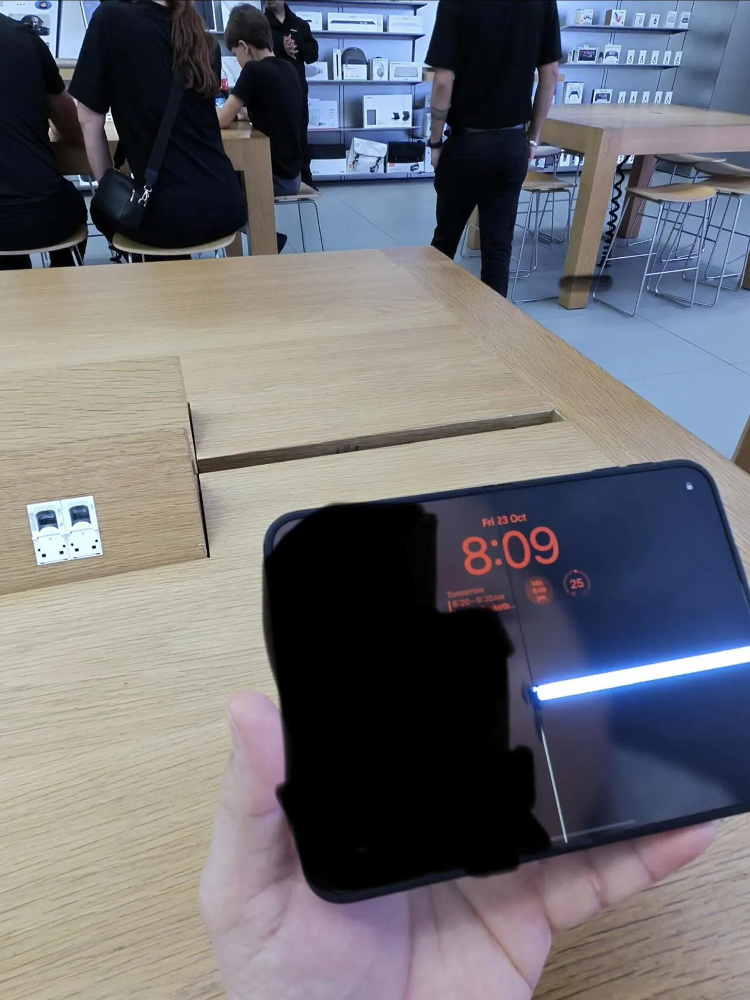
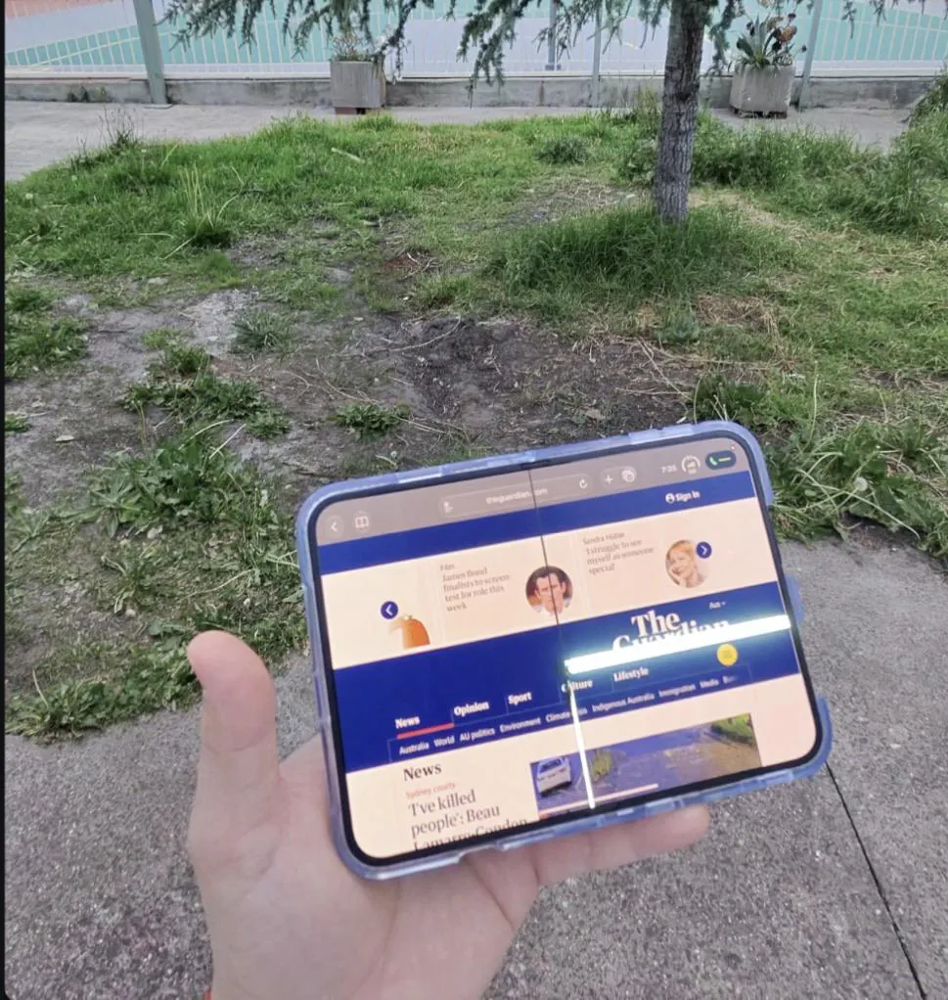
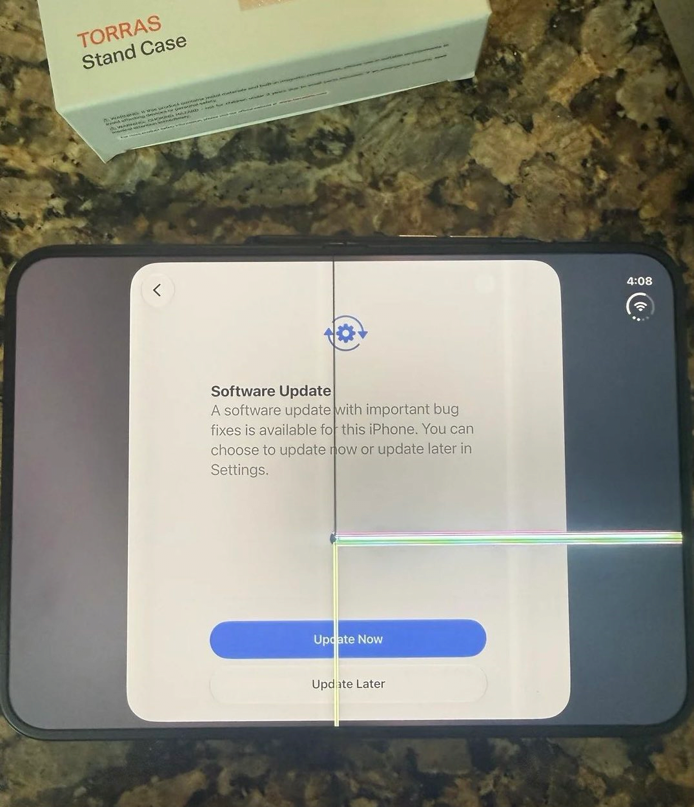
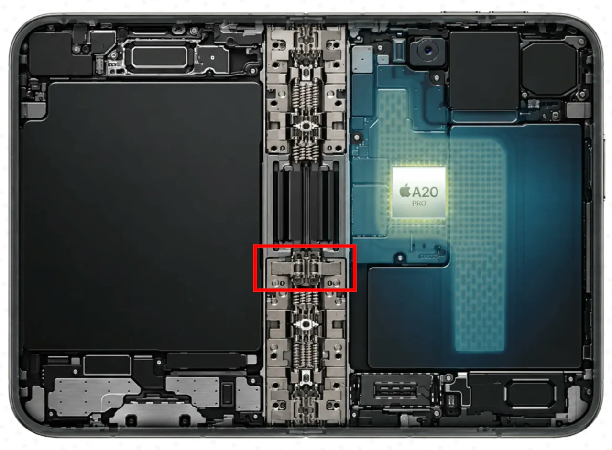

딱 저부분에서만 발생하는중





딱 저부분에서만 발생하는중
뜯어서 똑같이 하면 특허침해지 ㅋㅋ
대체했다가 폭망한듯
통쾌했어요
아이폰 듀오에는 힌지에 주름 방지 기믹들어가 있는데 이 기믹이 원인 같다는 분석 있음
즉 소프트웨어로는 해결 못 함
캬.. 역시 삼성이 힌지에 그냥 수년 박은게 아니지
뻐큐하는 것 같네 ㅋㅋ
아 확열었을때 저 힌지가 디스플레이를 치나보네
존나 천천히 열어야할듯
저새끼들 분명히 삼성 폴더블 다 뜯어서 봤을텐데 왜 그러지